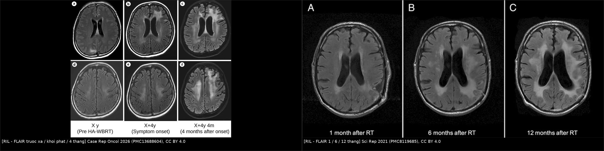
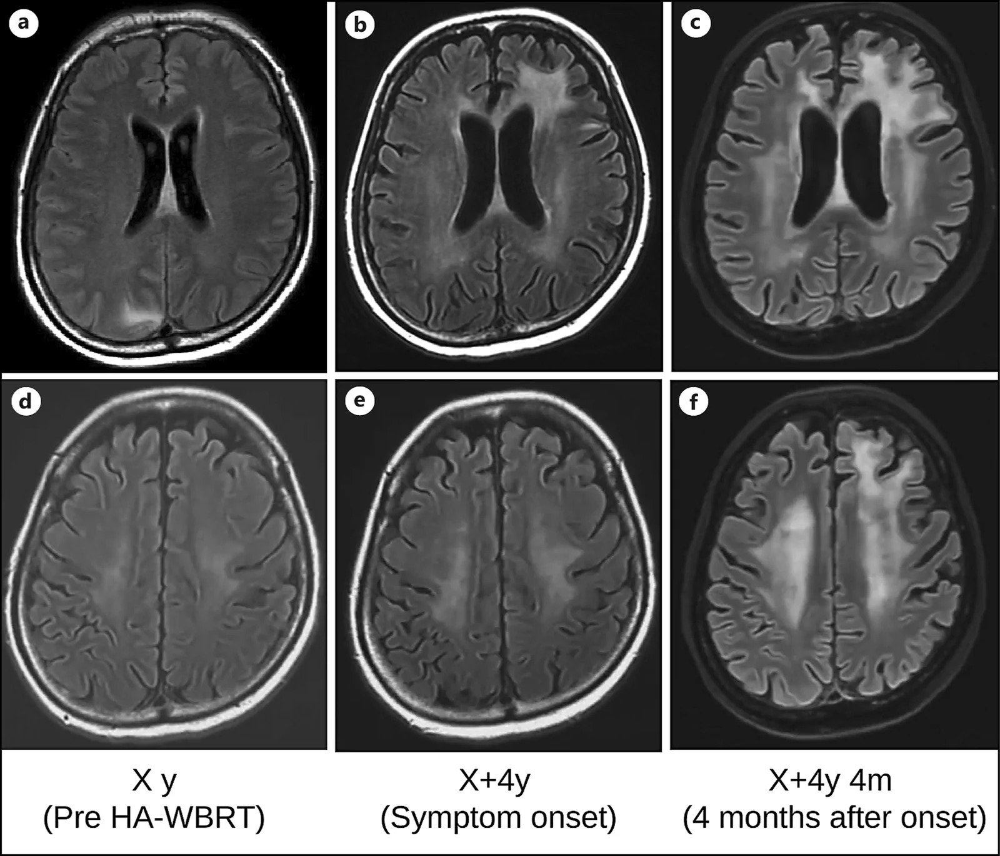
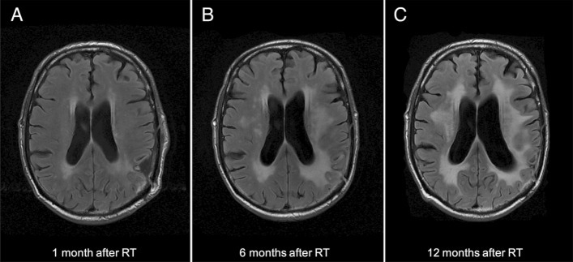
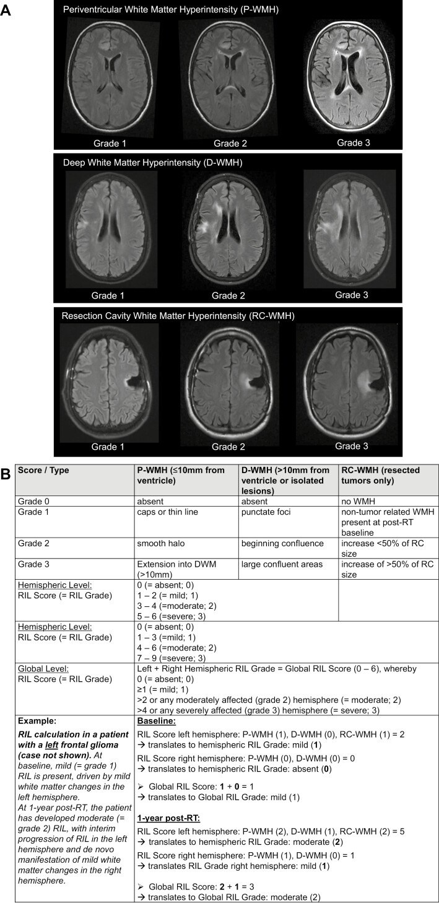

261 — Bệnh não chất trắng do xạ trị / Radiation-induced leukoencephalopathy (RIL)
Tags: pattern:roi-loan-chat-trang pattern:doi-xung pattern:teo-nao pattern:khong-ngam-thuoc vung:chat-trang-quanh-nao-that vung:nao score:Fazekas score:Scheltens protocol:MRI-nao protocol:MRI-DSC-MRS protocol:danh-gia-nhan-thuc
Mức chắc chắn (certainty): tổng hợp y văn (literature synthesis) — đoàn hệ 81 bệnh nhân u thần kinh đệm sống dài (Sci Rep 2021, PMC8119685), so sánh proton–photon 34 ca theo dõi 3 năm (The Oncologist 2024, PMC11630789), 1 ca nguyên văn có ảnh sau HA-WBRT (Case Rep Oncol 2026, PMC13688604), tổng quan hình ảnh sau điều trị u não (Front Med 2026, PMC13589733) và tổng quan biến chứng muộn sau xạ (Insights Imaging 2018, PMC6269328). Không có thử nghiệm ngẫu nhiên nào điều trị RIL; mọi khuyến cáo xử trí là tổng hợp thực hành, chỗ suy luận được ghi rõ.
Câu chốt: RIL là chẩn đoán hình ảnh + thời gian + phân bố, không phải chẩn đoán mô bệnh: FLAIR sáng đối xứng quanh não thất và chất trắng sâu, nằm trong trường chiếu, KHÔNG ngấm thuốc, KHÔNG choán chỗ, kèm teo não, xuất hiện nhiều tháng đến nhiều năm sau xạ. Ba ngưỡng phải thuộc: (1) RIL gặp 54,3% người sống > 30 tháng sau xạ u thần kinh đệm ác tính; (2) tích lũy 21% / 42% / 48% ở 12 / 36 / 60 tháng; (3) thang Scheltens sửa đổi ≥ 10 điểm là ngưỡng của một định nghĩa RIL đã công bố. Sai lầm chết người không phải bỏ sót RIL — mà là gọi RIL là tái phát u lan tỏa và xạ lại/sinh thiết não, hoặc gọi là "lão hóa bình thường" và bỏ mất suy giảm nhận thức tiến triển.
1. Tổng quan bệnh học – cơ chế hình ảnh
1.1 Bệnh học: tổn thương chất trắng muộn, lan tỏa, không phải một ổ hoại tử
- Định nghĩa: RIL là biến chứng muộn của xạ trị não, đặc trưng bởi tăng tín hiệu T2/FLAIR đối xứng vùng quanh não thất và chất trắng sâu, không ngấm thuốc, không choán chỗ, có thể tiến triển tới lan tỏa toàn bộ chất trắng + teo não, và thường chừa sợi U dưới vỏ, thể chai và vỏ não (Front Med 2026, PMC13589733).
- Khác hoại tử phóng xạ (bài 204) ở đâu: hoại tử phóng xạ là ổ — ngấm vòng, phù, choán chỗ, thường 6–24 tháng sau xạ khu trú; RIL là lan tỏa, không ngấm, không choán chỗ, thường muộn hơn và liên quan liều + thể tích chiếu + hóa trị đồng thời (đặc biệt methotrexate).
- Sinh lý bệnh — chuỗi 4 bước:
- Tổn thương nội mô vi mạch → dày, trong suốt hóa thành mạch, hẹp lòng, giảm tưới máu chất trắng.
- Thiếu máu cục bộ mạn + stress oxy hóa → mất oligodendrocyte, mất myelin, tổn thương sợi trục.
- Astrocyte phản ứng + xơ hóa quanh mạch → mô thay bằng gliosis và khoảng ngoại bào chứa nước tự do.
- Teo não muộn → giãn não thất ex vacuo + giãn rãnh, không phải não úng thủy áp lực.
- Yếu tố nguy cơ đã kiểm chứng: tuổi > 60, hút thuốc, đa hình rs2120825 locus PPARγ, liều xạ cao, thể tích chiếu lớn, xạ toàn não, hóa trị đồng thời/MTX. Trong đoàn hệ 81 ca: 44/81 (54,3%) phát triển RIL; 29/44 có triệu chứng — sa sút trí tuệ dưới vỏ 28 ca, rối loạn dáng đi 12, tiểu không kiểm soát 9; triệu chứng xuất hiện trung vị 33 tháng sau xạ (4,7–146,1 tháng) (PMC8119685).
1.2 TẠI SAO hình ảnh trông như vậy (vật lý + mô bệnh)
- FLAIR/T2 sáng: mô mất myelin + gliosis + nước ngoại bào tăng → thời gian T2 dài. Đây là phù vận mạch/tổn thương cấu trúc, không phải phù tế bào; vì vậy FLAIR sáng lan theo bó sợi, bờ không rõ, đối xứng.
- T1 giảm tín hiệu, KHÔNG sáng: không có mỡ, không có methemoglobin, không có melanin — chỉ là mô mất myelin nhiều nước.
- Không ngấm gadolinium: hàng rào máu–não còn nguyên ở RIL (khác hoại tử phóng xạ/u). Đây là dấu chốt loại mạnh nhất trên phim thường: một vùng FLAIR sáng lan tỏa không ngấm khó là u đặc đang hoạt động.
- Không choán chỗ, thay vào đó là TE O: mô mất dần → não thất giãn, rãnh giãn. Nếu thấy hiệu ứng khối, xóa rãnh, đẩy đường giữa thì phải nghĩ u/hoại tử/áp-xe, không phải RIL.
- DWI/ADC: RIL không hạn chế khuếch tán; ADC tăng do mất tế bào và tăng nước ngoại bào. DWI sáng + ADC tối = nhồi máu cấp, áp-xe, hoặc PML — không phải RIL.
- Chừa sợi U dưới vỏ: tổn thương bắt đầu ở chất trắng sâu quanh mạch xuyên, nơi mật độ mạch thấp và liều xạ cao; sợi U nằm ngay dưới vỏ, giàu mạch và được tưới máu từ màng mềm → tương đối được bảo vệ. Vỏ não và thể chai cũng thường chừa (PMC13589733).
- Vì sao đối xứng khi xạ toàn não, bất đối xứng khi xạ khu trú: phân bố theo bản đồ liều; xạ toàn não cho tổn thương hai bán cầu; xạ khu trú cho tổn thương nặng hơn ở bán cầu cùng bên ổ chiếu, có thể lan sang bán cầu đối diện qua thể chai.
1.3 Ngưỡng định lượng trụ cột
| Đại lượng | Con số | Nguồn |
|---|---|---|
| RIL ở u thần kinh đệm ác tính sống > 30 tháng | 54,3% (44/81) | PMC8119685 |
| Tích lũy RIL | 21% (12 tháng) · 42% (36 tháng) · 48% (60 tháng) | PMC8119685 |
| Triệu chứng (nếu có RIL) | 29/44 = 65,9%; khởi phát trung vị 33 tháng (4,7–146,1) | PMC8119685 |
| Tuổi / hút thuốc / SNP | > 60 tuổi, hút thuốc, rs2120825 (PPARγ) | PMC8119685 |
| RIL vừa–nặng trong 3 năm | 62% (photon) · 71% (proton) | PMC11630789 |
| Vi chảy máu sau xạ (CMB) | 76% (photon) · 71% (proton); trung bình 4,0 · 4,2 CMB | PMC11630789 |
| Hoại tử mô sau xạ | 6% (photon) · 18% (proton) (khác biệt không ý nghĩa) | PMC11630789 |
| Liều xạ trong đoàn hệ | 55–62 Gy, 1,8–2,0 Gy/phân liều | PMC8119685 |
| Ngưỡng Scheltens sửa đổi để gọi RIL | ≥ 10 điểm | PMC8119685 |
| Ngưỡng chi tiết: P-WMH | tổn thương cách thành não thất ≤ 10 mm | PMC11630789 |
| Ca nguyên văn | HA-WBRT 30 Gy/10 + SRT 30 Gy/3; RIL 4 năm sau WBRT; MMSE 30 → 18 trong 2 tháng; tử vong ~2 tháng sau chẩn đoán | PMC13688604 |
| Bảo vệ nhận thức | NRG CC001: 518 ca, TCF 59,5% vs 68,2%, HR 0,74 (HA-WBRT + memantine) | PMC11379916 |
2. Mẫu hình + chẩn đoán phân biệt theo vị trí (Gamut)
Mẫu hình chốt: FLAIR sáng đối xứng, ưu thế quanh não thất + chất trắng sâu, bờ hòa lẫn, không ngấm, không choán chỗ, teo não, chừa sợi U dưới vỏ/thể chai/vỏ, trong trường chiếu cũ, xuất hiện sau 6 tháng–nhiều năm.
Gamut theo vị trí + bối cảnh:
- Quanh não thất, đối xứng, sau xạ toàn não: RIL · bệnh mạch nhỏ do tăng huyết áp/đái tháo đường (Fazekas) · HIV encephalopathy · hủy myelin thẩm thấu (cầu não trung tâm) · bệnh não gan (T1 sáng hạch nền) · nhiễm độc hóa trị (MTX, CAR-T/ICANS).
- Chất trắng dưới vỏ, bất đối xứng, KHÔNG ngấm: PML (JCPyV) · ADEM · CADASIL (cực thái dương trước, bao ngoài) · u thần kinh đệm thâm nhiễm lan tỏa (gliomatosis) · bệnh mạch do xạ.
- Quanh ổ xạ, có ngấm vòng + phù + choán chỗ: hoại tử phóng xạ (bài 204) · tái phát tại chỗ · áp-xe · nhồi máu bán cấp.
- Ngấm vỏ–màng mềm dạng cuộn, hồi phục: SMART (bài 259) — khác RIL ở chỗ ngấm và hồi phục.
- Tăng tín hiệu đối xứng hai bên đồi thị/quanh cống: Wernicke (bài 3033) · nhồi máu Percheron · CVST sâu.
- Gợi nhớ 4D: Delay (nhiều tháng–năm) · Distribution (quanh não thất–sâu, theo trường chiếu) · Density (FLAIR sáng, T1 tối, không ngấm) · Decline (nhận thức/dáng đi, kèm teo não).
3. Bảng so sánh phân biệt (ma trận đối chiếu)
| Thực thể (entity) | Hình ảnh điển hình | Chốt vào (rule-in) | Chốt loại (rule-out) | Gợi ý xác nhận |
|---|---|---|---|---|
| RIL (bệnh não chất trắng do xạ) | FLAIR sáng đối xứng quanh não thất + chất trắng sâu, không ngấm, không choán chỗ, teo não, chừa U-fibers | Đúng trường chiếu + latency > 6 tháng + không ngấm + không choán chỗ + teo não | Ngấm thuốc, choán chỗ, xóa rãnh, tổn thương ngoài trường chiếu → không phải RIL đơn thuần | MRI 3T + so phim cũ + Scheltens sửa đổi ≥ 10; theo dõi 3–6 tháng |
| Tái phát u lan tỏa | Chất trắng bất đối xứng, bờ không đều, có thể ngấm, choán chỗ, xâm lấn vỏ/thể chai | Tăng thể tích liên tục + ngấm mới + rCBV cao + Cho/NAA cao | Đối xứng + không ngấm + teo + ổn định/giảm khi chụp lại → không phải tái phát | DSC rCBV, MRS Cho/NAA, MET/FET-PET; sinh thiết chỉ khi đổi điều trị |
| Hoại tử phóng xạ (RN) | Ổ ngấm vòng mỏng, phù, có thể choán chỗ; trong trường xạ | 6–24 tháng + vòng ngấm + rCBV thấp + lipid–lactate | Lan tỏa, không ngấm, không choán chỗ, teo → RIL | DSC-MRI + MRS; xem bài 204 |
| Giả tiến triển (pseudoprogression) | Ngấm tăng quanh ổ xạ, phù tăng, lâm sàng ổn | < 12 tuần sau hóa–xạ + tự giảm khi chụp lại 4–8 tuần | Tiến triển sau 12 tuần hoặc không ngấm lan tỏa → không phải giả tiến triển | Chụp lại 4–8 tuần; RANO |
| Bệnh mạch nhỏ (SVD) | FLAIR quanh não thất đối xứng, thường có lacune hạch nền, CMB sâu; không liên quan liều xạ | Tuổi già + THA/ĐTĐ + lacune + CMB sâu | Bệnh nhân trẻ, phân bố đúng bán cầu chiếu, latency sau xạ → nghĩ RIL | Fazekas; kiểm soát yếu tố nguy cơ |
| PML | Chất trắng dưới vỏ bất đối xứng, bờ rõ, chừa vỏ, DWI sáng/ADC tối ở rìa | Bất đối xứng + U-fibers + ADC thấp rìa + PCR JCV | Đối xứng quanh não thất + ADC cao + không suy giảm miễn dịch → không PML | PCR JCV dịch não tủy; xem bài 206 |
| Bệnh não do hóa trị (MTX/CAR-T) | FLAIR quanh não thất, có thể đối xứng; liên quan thời điểm truyền | Tiền sử MTX nội tủy/động mạch hoặc CAR-T + thời gian khớp | Khởi phát nhiều năm sau xạ, không hóa trị gần → RIL | Ngừng/giảm thuốc nghi ngờ; MRI theo dõi |

Trái: bệnh nhân HA-WBRT 30 Gy/10 + SRT 30 Gy/3 — trước xạ (X y), lúc khởi phát suy giảm nhận thức (X+4y), và 4 tháng sau (X+4y 4m): FLAIR sáng quanh não thất–chất trắng sâu lan rộng, não thất giãn, không có ổ choán chỗ. Phải: xạ khu trú 60 Gy/30 phân liều + TMZ — FLAIR sáng quanh ổ mổ lan ra hai bán cầu ở 1, 6, 12 tháng, kèm teo vỏ–dưới vỏ. Nguồn: Case Rep Oncol 2026 (PMC13688604) và Sci Rep 2021 (PMC8119685), CC BY 4.0. Ảnh ghép letterbox, không crop.RIL và "tái phát lan tỏa": ba câu hỏi tách biệt
- Có ngấm thuốc không? Không ngấm + không choán chỗ → nghiêng RIL; ngấm mới/tiến triển → nghiêng u/RN.
- Có choán chỗ không? RIL teo; u đẩy. Đo thể tích não thất và độ dày vỏ trên hai thời điểm — RIL làm não thất to lên, u làm đường giữa lệch.
- Có bằng chứng tân mạch không? rCBV thấp và Cho thấp + lipid–lactate → RIL; rCBV cao, Cho/NAA cao → u. Nếu không có DSC/MRS, chụp lại 6–8 tuần là "xét nghiệm" rẻ nhất.
4. Protocol chụp + hệ phân độ/điểm chuẩn hóa
4.1 Protocol MRI
- Tối thiểu: T1W axial (không tiêm), T2W, FLAIR 3D (1–2 mm, axial + coronal), DWI + ADC, SWI (vi chảy máu sau xạ), T1W sau gadolinium 3 bình diện.
- Khi cần phân biệt với u: DSC-MRI (rCBV) + MRS đa voxel (voxel trong vùng FLAIR sáng không ngấm, tránh hoại tử/xương); thêm MET/FET-PET nếu có.
- Đo và ghi số: vị trí (quanh não thất/chất trắng sâu), khoảng cách tới thành não thất (ngưỡng 10 mm phân P-WMH và D-WMH), Scheltens sửa đổi, thể tích não thất bên, độ dày vỏ, có/không ngấm, có/không choán chỗ, có/không CMB.
- Đánh giá nhận thức: MMSE/MoCA ở mỗi lần chụp; ghi mốc thời gian so với xạ.
4.2 Phân độ
- Thang Scheltens sửa đổi (dùng trong định nghĩa RIL): tổng điểm ≥ 10 mới đủ ngưỡng (thang gồm nắp trước/nắp chẩm/dải sát não thất và 5 vùng chất trắng + hạch nền).
- RIL score/grade (The Oncologist 2024): chia P-WMH (≤ 10 mm từ não thất), D-WMH (> 10 mm/ổ biệt lập), RC-WMH (quanh ổ mổ); mỗi loại grade 1–3; cộng lại → grade 0–3 toàn não/bán cầu. ICC > 0,85 — dùng được để theo dõi dọc.
- Phân độ theo triệu chứng: không triệu chứng · suy giảm nhận thức nhẹ · sa sút trí tuệ dưới vỏ + rối loạn dáng đi + tiểu không kiểm soát (bộ ba "giả NPH").
flowchart TD
A[FLAIR sáng quanh não thất sau xạ não] --> B{Trong trường chiếu cũ?}
B -->|Không| Z[Gamut khác: SVD, PML, MTX, HIV, CADASIL]
B -->|Có| C{Có ngấm thuốc hoặc choán chỗ?}
C -->|Có| D[U tái phát / hoại tử xạ / áp-xe: DSC-MRS ± sinh thiết]
C -->|Không| E{Thời điểm sau xạ}
E -->|< 12 tuần| F[Giả tiến triển: chụp lại 4-8 tuần]
E -->|> 6 tháng| G[RIL: Scheltens sửa đổi, RIL grade, MMSE-MoCA]
G --> H{Chụp lại 3-6 tháng}
H -->|Ổn định hoặc giảm, teo tăng| I[Theo dõi RIL, phục hồi nhận thức, kiểm soát nguy cơ mạch]
H -->|Ngấm mới, choán chỗ, tiến triển| D
5. Biến thể bình thường và cạm bẫy
- "Chất trắng tuổi già" không phải chẩn đoán: ở người > 60 tuổi hoặc hút thuốc, RIL và bệnh mạch nhỏ chồng lấp; đừng quy mọi FLAIR sáng cho lão hóa — so phim trước xạ là bắt buộc.
- HA-WBRT KHÔNG bảo vệ khỏi RIL lan tỏa: ca nguyên văn phát triển RIL nặng 4 năm sau HA-WBRT + SRT, dù đã tránh hồi hải mã và đạt kiểm soát u (PMC13688604). Đừng hứa "không suy giảm nhận thức" chỉ vì đã dùng HA-WBRT.
- Giả tiến triển < 12 tuần ≠ RIL: giả tiến triển ngấm và tự giảm; RIL không ngấm và muộn. Gọi sai → ngừng/đổi điều trị oan hoặc xạ lại.
- Tăng tín hiệu sau xạ có thể là "bóng" của phù quanh u đang điều trị: corticoid làm giảm phù, không làm RIL hết; đừng dùng đáp ứng corticoid để chốt chẩn đoán.
- Đừng sinh thiết một vùng FLAIR sáng đối xứng không ngấm chỉ để "chắc": mô có thể chỉ là gliosis/mất myelin, không phân biệt được với u thâm nhiễm, mà biến chứng không nhỏ. Sinh thiết khi có ngấm/choán chỗ/tiến triển hoặc khi kết quả thay đổi điều trị.
- Cạm bẫy "satisfaction of search": thấy di căn não ổn định rồi bỏ qua teo não + giãn não thất — dấu hiệu RIL và suy giảm nhận thức.
- Thuốc/hóa trị đồng thời: methotrexate (nội tủy/động mạch) làm tăng nguy cơ và làm tổn thương nặng hơn, sớm hơn; trastuzumab deruxtecan trong ca nguyên văn là yếu tố gây nhiễu không loại trừ được — bài gốc vẫn kết luận RIL dựa trên phân bố + latency (ghi chú phản biện, không sửa nguồn).
- PML là bẫy lớn: PML bất đối xứng, ăn sợi U dưới vỏ, ADC thấp ở rìa, bờ rõ; RIL đối xứng, ADC cao, chừa U-fibers. Ở người suy giảm miễn dịch sau xạ/hóa trị, PCR JCV phải làm trước khi gọi RIL.
6. Tự lượng giá — Blind Quiz
Ca 1 — Nữ 43 tuổi, ung thư vú HER2+ có di căn não, đã HA-WBRT 30 Gy/10 và SRT 30 Gy/3; 4 năm sau suy giảm nhận thức nhanh. Nhìn FLAIR, mô tả trước khi mở đáp án.

- Gợi ý: MMSE từ 30 xuống 18 trong 2 tháng; không sốt, không đau đầu dữ dội; kiểm soát u nội sọ tốt.
- Hỏi: (1) Mô tả phân bố tổn thương và đối xứng? (2) Có ngấm/choán chỗ không? (3) Ba chẩn đoán phân biệt và dấu hiệu nào chốt?
Bấm để hiện đáp án (findings + chẩn đoán)
- Findings: FLAIR sáng đối xứng quanh não thất và chất trắng sâu hai bán cầu, lan rộng theo thời gian; không ngấm thuốc, không choán chỗ; não thất giãn và rãnh giãn (teo não); chừa vỏ và sợi U dưới vỏ. Không có ổ ngấm vòng, không có khối.
- Chẩn đoán: RIL muộn sau HA-WBRT + SRT, biểu hiện bằng sa sút trí tuệ dưới vỏ tiến triển. Cơ chế: mất myelin + gliosis + teo não do tổn thương vi mạch muộn; hàng rào máu–não còn nguyên nên không ngấm.
- Phân biệt: tái phát u lan tỏa (bất đối xứng, choán chỗ, ngấm, rCBV cao) · hoại tử phóng xạ (ổ ngấm vòng) · bệnh mạch nhỏ (tuổi/THA, lacune) · PML (bất đối xứng, ADC thấp rìa, PCR JCV).
- Xử trí: không xạ lại, không sinh thiết vùng không ngấm; chụp lại 3–6 tháng, đánh giá MMSE/MoCA, phục hồi nhận thức, kiểm soát yếu tố nguy cơ mạch.
- Nguồn: Case Rep Oncol 2026 (PMC13688604), Fig. 3, CC BY 4.0.
Ca 2 — Nam 48 tuổi, u nguyên bào thần kinh đệm thùy đỉnh trái, xạ 60 Gy/30 phân liều + TMZ. So ba mốc 1–6–12 tháng.

- Gợi ý: sau 1 năm có suy giảm trí nhớ (MOCA 13/30), rối loạn dáng đi, tiểu không kiểm soát.
- Hỏi: Tổn thương tiến triển theo hướng nào? Có phải tái phát u? Dấu hiệu nào giúp phân biệt?
Bấm để hiện đáp án
- Findings: FLAIR sáng quanh ổ mổ lan dần ra chất trắng hai bán cầu từ 1 → 6 → 12 tháng; teo vỏ và dưới vỏ tăng; không ngấm, không choán chỗ.
- Chẩn đoán: RIL — đúng bộ ba định nghĩa của đoàn hệ: (1) tăng tín hiệu quanh ổ mổ lan tới ≥ 1 thùy khác hoặc hai bên quanh não thất; (2) teo vỏ/dưới vỏ; (3) Scheltens sửa đổi ≥ 10. Triệu chứng: sa sút trí tuệ dưới vỏ + rối loạn dáng đi + tiểu không kiểm soát.
- Vì sao không phải tái phát: không ngấm, không choán chỗ, teo tăng thay vì thể tích khối tăng; nếu nghi ngờ, DSC rCBV thấp + Cho thấp + lipid–lactate.
- Nguồn: Sci Rep 2021 (PMC8119685), Figure 1, CC BY 4.0; số liệu đoàn hệ trong cùng bài (54,3%; 21/42/48%).
Ca 3 — Cùng bệnh nhân, làm thế nào "đếm" mức độ RIL để theo dõi dọc?

- Hỏi: Ba vùng nào được chấm? Ngưỡng phân biệt P-WMH và D-WMH? Khi nào gọi "nặng" ở mức toàn não?
Bấm để hiện đáp án
- Ba vùng: (1) quanh não thất (P-WMH, ≤ 10 mm từ thành não thất), (2) chất trắng sâu (D-WMH, > 10 mm hoặc ổ biệt lập), (3) quanh ổ mổ (RC-WMH); mỗi vùng grade 1–3 theo thang Fazekas sửa đổi.
- Cách tính: cộng điểm ba vùng → RIL score → quy đổi grade 0–3 cho từng bán cầu và toàn não. ICC > 0,85 nên dùng được để so sánh giữa các lần chụp.
- "Nặng" toàn não: grade 3 khi có ≥ 1 bán cầu grade 3 hoặc tổng điểm cao (bảng trong ảnh); thực hành: grade 3 + teo não + suy giảm nhận thức = RIL nặng.
- Nguồn: The Oncologist 2024 (PMC11630789), Figure 1, CC BY-NC 4.0 — dùng nguyên bản, không cắt/ghép.
Bài liên quan chéo
- 200 – Tổng quan hệ Thần kinh (bản đồ gamut chất trắng)
- 204 – Hoại tử phóng xạ sau xạ trị u não (thể Ổ, ngấm vòng — phân biệt với RIL lan tỏa)
- 259 – Hội chứng SMART (ngấm vỏ–màng mềm, hồi phục)
- 206 – PML & IRIS (bất đối xứng, ADC thấp rìa, PCR JCV)
- 215 – Mất myelin (gamut bệnh chất trắng)
- 3033 – Wernicke & thiếu thiamin (đối xứng quanh cống–đồi thị)
- 3031 – PRES (phù vận mạch, ADC tăng)
- 218 – Thoát vị não & não úng thủy (phân biệt giãn não thất do teo với úng thủy áp lực)
Ảnh
261_ril-flair-serial_PMC13688604-F3.jpg— FLAIR trước xạ / khởi phát / 4 tháng; Case Rep Oncol 2026 (PMC13688604), CC BY 4.0.261_ril-flair-1-6-12m_PMC8119685-F1.jpg— FLAIR 1/6/12 tháng; Sci Rep 2021 (PMC8119685), CC BY 4.0.261_ril-grade_PMC11630789-F1.jpg— thang RIL grade; The Oncologist 2024 (PMC11630789), CC BY-NC 4.0 (nguyên bản).composite_ril-tien-trien.jpg— ghép 2 ảnh CC BY ở trên, letterbox, dải attribution.
Không dùng để chẩn đoán độc lập khi chưa có người hướng dẫn.